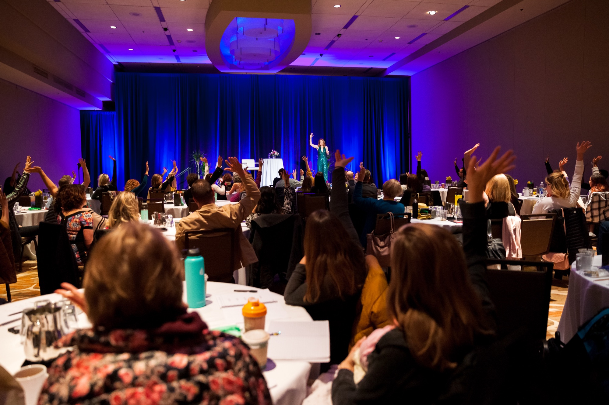
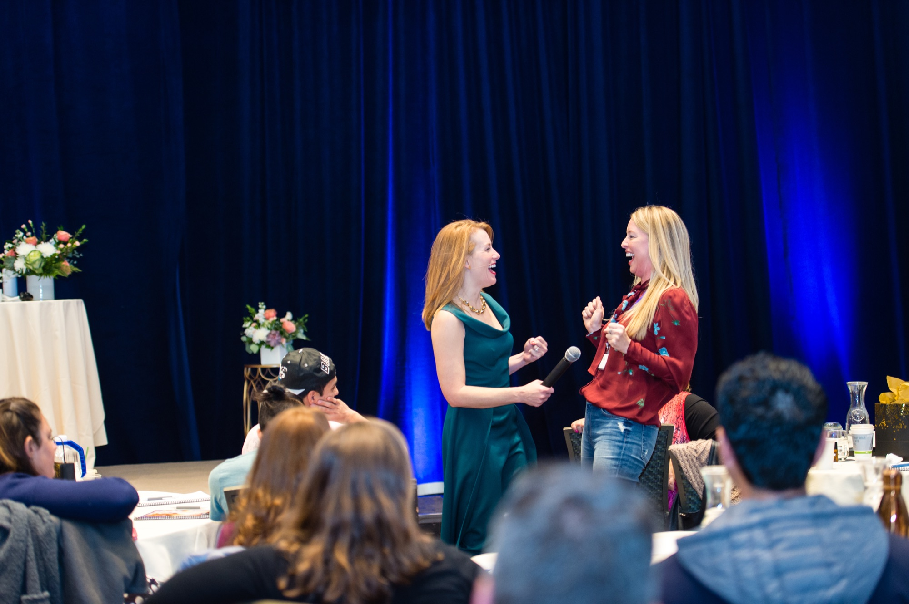

What if the change you've been working toward is closer than you think?
If you've done the work, the books, the coaching, maybe even the therapy, and you can explain your pattern better than anyone else, why does it still feel like you haven't made the change you want? The gap you're in isn't in what you know; it's in your alignment, and when the pattern underneath clears, the change you've been reaching for starts to hold.
I feel like I have been looking for this program my whole life!
Does any of this sound familiar?
You probably know what you need to do, but you're still not doing it.
There's a pattern underneath that's louder than any plan, and every time you start again, it quietly pulls you back to what's familiar.
The money comes in, but it never feels like enough.
That feeling was never about the number; it comes from the pattern, which is why earning more hasn't changed it.
Life looks good on paper, but it still feels hard.
Most people don't know a pattern can stop existing, because everything they've tried only taught them to manage it.
Why it hasn't held
Maybe you've tried therapy, coaching, a retreat or a course, and it helped for a while, or maybe you've simply been told this is how life goes.
If you've done the work and you're still stuck, most likely the gap is in your alignment.
Your life organizes itself around the pattern you're aligned in, so more effort only gets you more of the same. When we find the root pattern and clear it at the energy level, your thoughts, feelings and actions line up with the life you're choosing, and it stops repeating instead of being something you keep managing. Nothing is wrong with you; you were handed tools for the surface, and nobody showed you how to reach the root. See how the method works.
I didn't even know it was possible to not have a pattern anymore.
Meet your guide
Hi, I'm Tamara.
I've been exactly where you are. At 29 years old, I was the number one sales rep at a Fortune 500 company; I had the money, the properties, the bank account and the success, and I still felt empty inside.
I began working on myself and didn't see the big changes, and I became so obsessed with change that I invested $150,000 in my own growth, completed more than 53 courses and worked with masters from around the world.
It wasn't until I started working with energy that everything changed, because when you work with the root energy of a pattern, a problem or an issue and you change it, everything else changes.
The bigger picture
The planet is waking up, and so are you.
You're being pulled toward something bigger than yourself. You want to break free of the system that kept you small, busy and focused on the wrong thing, and you've felt it for a while now. Welcome, my friend; you're one of the first in a change that's happening everywhere at once.
What you're stepping into is a foundation of living for the next evolution of humanity, and there's nowhere else to get this training.

How it feels to start
This won't be just one more thing to keep up with.
This is about changing how you live your life, and that's the work we do here. Most people start by watching a few videos, listening to a conversation or sitting in on a free meditation.
This isn't magical thinking…
My background is analytical. I was a type A, anti woo woo, overachieving and very successful corporate businesswoman, so everything I learned on this journey had to be backed by science and proven with real evidence.
I became obsessed with change early on, and I didn't find many methodologies that made the change stick and make a lasting difference. I'm also very attuned to processes and systems that are efficient, the quickest way to get from point A to point B, and that's what this entire methodology is built on: a system that trains you to work in the energetic realm, through energy work and nervous system regulation, so you can do it yourself. You don't become dependent on a guru; you leave knowing how to clear what comes up, for the rest of your life.
The method moves in three steps: we find the root pattern, you choose the reality you want to live in, and we align your thoughts, feelings and actions to it, with nervous system regulation so the change holds.

I have a MA in clinical psychology, own and operate a successful business, and I've never met anyone as skilled at digging to root causes buried in the human psyche and articulating them in a comprehensible manner.
I had 10 years of personal growth and programs but I was still on the roller coaster. It was finally tending to my nervous system that changed everything. I do more than ever but it doesn't feel like it at all.
We have a very solid and successful business, and there were areas where we were stuck and couldn't figure out why; we kept getting to the same place and not getting past it. In one conversation, we got to the very bottom of it.
If you're at a crossroads…
…in your life
A marriage ending or beginning, kids leaving, a career that no longer fits, a body asking you to slow down. You know you're meant for more, and you're tired of carrying it all alone. Divine Self Mastery, a year you dedicate to yourself, gives you the practice and the people to move.
See Divine Self Mastery…in your business
Revenue stalls at the same place, the team keeps hitting the same wall, decisions take more out of you than they should. Established founders work with me privately for a year, and the business moves when the founder's pattern clears.
About private work